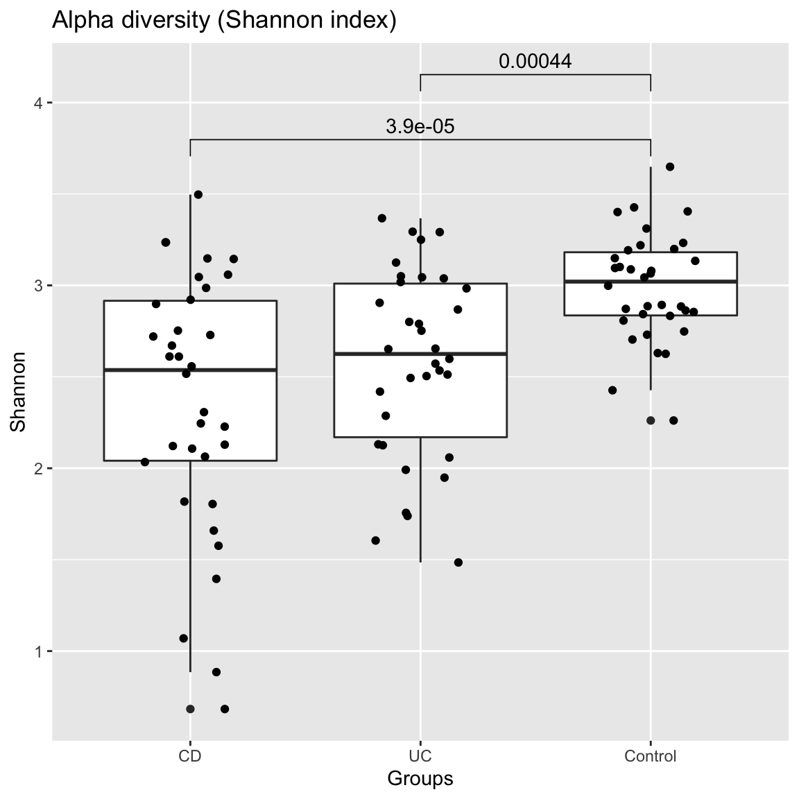
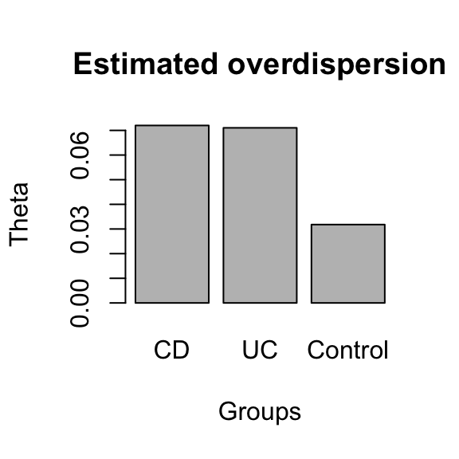
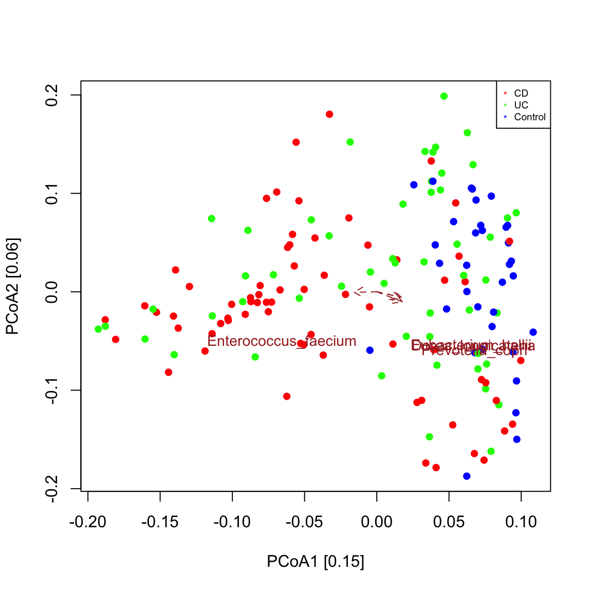

seqgroup tour
Karoline Faust
2020-04-30
seqgroup_tour.RmdBackground on the example data
The example data in this tutorial are taken from an IBD study carried out by Franzosa et al. (https://www.nature.com/articles/s41564-018-0306-4). In this study, faecal samples from the PRISM cohort were sequenced and analysed. The PRISM cohort consists of 68 cases of Crohn’s disease (CD), 53 cases of ulcerative colitis (UC) and 34 controls, thus totalling 155 samples. Whole-genome shotgun sequencing was carried out. Relative abundances of species were estimated with species-specific marker genes using MetaPhlan2 (http://huttenhower.sph.harvard.edu/metaphlan2) and function abundances were computed with HUMAnN2. Species below or equal to 0.1% abundance in at least five samples were excluded. The abundance of functions (i.e. enzyme-coding genes) was quantified using the HUManN2 pipeline (http://huttenhower.sph.harvard.edu/humann2). CD and UC together are also referred to as inflammatory bowel disease (IBD).
Preparation of the analysis
We start by loading the seqgroup library.
library(seqgroup)
Next, we load the taxon abundances, taxon lineages, functions and sample metadata from the PRISM cohort. Taxon abundances and metadata have matching sample identifiers, thus the status of a sample can be looked up in the metadata table. We summarise the metadata using the summary command. This command also tells us that some metadata information are missing, for instance there are 62 missing values (NA) for fecal calprotectin.
data("ibd_taxa") # taxon x sample matrix data("ibd_lineages") # lineage x taxon matrix data("ibd_metadata") # metadata x sample data frame data("ibd_functions") # functions x sample matrix summary(ibd_metadata)
## SRA_metagenome_name Age Diagnosis Fecal.Calprotectin antibiotic
## G35127 : 1 24 : 10 CD :68 2 : 5 No :134
## G35128 : 1 30 : 10 Control:34 231 : 3 Yes : 18
## G35152 : 1 26 : 7 UC :53 32 : 3 NA's: 3
## G36347 : 1 29 : 7 1 : 2
## G36348 : 1 31 : 7 12 : 2
## G36349 : 1 32 : 6 (Other):78
## (Other):149 (Other):108 NA's :62
## immunosuppressant mesalamine steroids
## No :100 No :109 No :122
## Yes: 55 Yes : 44 Yes : 31
## NA's: 2 NA's: 2
##
##
##
## In this data set, we have three groups of interest: CD, UC and control. For future analyses, it is handy to have a vector with the group memberships ready. We can extract this vector from the metadata table. The two disease groups (UCD and CD) can also be merged into a single group. This is done in the second group membership vector (ibd.groups).
groups=as.vector(ibd_metadata$Diagnosis) ibd.groups=groups ibd.groups[ibd.groups=="UC"]="IBD" ibd.groups[ibd.groups=="CD"]="IBD"
Exploration of diversity
The first question when exploring a data set of microbial abundances is often whether groups have significantly different alpha or beta diversity. Seqgroup offers the compareGroups function to compare alpha and beta diversity across groups. Alpha diversity is assessed with the Shannon index, whereas beta diversity can be assessed for instance by comparing the Bray Curtis dissimilarity distribution. The number of samples considered for each group is by default equalised by randomly subsampling groups to the smallest group. Here, the alpha diversity of the control group is significantly higher while its beta diversity is significantly lower compared to the two IBD groups according to the unpaired Wilcoxon test. Interestingly, not only the taxonomic but also the function beta diversity is higher in the IBD groups than in the control samples. Function stat_compare_means from the R package ggpubr is used to plot the p-value on top of the distributions.
compareGroups(ibd_taxa,groups=groups,property="alpha",pvalViz = TRUE)
## [1] "Constraining sample number randomly to the same minimal group sample number of 34"
## [1] "Processing group CD"
## [1] "Processing group UC"
## [1] "Processing group Control"
## [1] "Number of significant differences in property alpha across groups: 2"
compareGroups(ibd_taxa,groups=groups,property="beta",pvalViz = TRUE)
## [1] "Constraining sample number randomly to the same minimal group sample number of 34"
## [1] "Processing group CD"
## [1] "Processing group UC"
## [1] "Processing group Control"
## [1] "Number of significant differences in property beta across groups: 3"
compareGroups(ibd_functions,groups=groups,property="beta",pvalViz = TRUE)
## [1] "Constraining sample number randomly to the same minimal group sample number of 34"
## [1] "Processing group CD"
## [1] "Processing group UC"
## [1] "Processing group Control"
## [1] "Number of significant differences in property beta across groups: 3"
The assessment of significance of a difference in beta diversity using the Bray Curtis distribution is problematic, since the number of all possible sample pairs is so large that even small differences become significant. Alternatively, we can assess beta diversity by fitting the Dirichlet-Multinomial to group-specific sample sets and compare the overdispersion parameter theta. In this case, the overdisperson supports the results obtained by comparing the Bray-Curtis distribution.
compareGroups(ibd_taxa,groups=groups,property="beta",method="DM")
## [1] "Abundances have been scaled with factor: 10000"
## [1] "Constraining sample number randomly to the same minimal group sample number of 34"
## [1] "Processing group CD"
## [1] "Processing group UC"
## [1] "Processing group Control"
## NULL
Taxon composition
Taxon composition is conveniently visualised by sorting taxa by abundance, for instance by their sum across samples, and then displaying only the top 10 or 15 taxa. We can do this for a single group. In the bar plot below, we can see that despite representing relative abundances, samples do not sum to one, because of the filtering step mentioned above.
control.indices=which(groups=="Control") groupBarplot(ibd_taxa[,control.indices],topTaxa = 15,legend.shift = 1.5, main="Control")

We can display the same randomly selected number of samples for the three groups. However, the taxa are now ranked by their sum across all samples, instead of being ranked per group.
groupBarplot(ibd_taxa,topTaxa = 15,groups=groups, randSampleNum = 10, legend.shift = 1.5, main="Taxon composition")
## [1] "Number of samples in group CD : 68"
## [1] "Number of samples in group UC : 53"
## [1] "Number of samples in group Control : 34"
We can obtain a group-specific ranking and preserve the color code using extendTaxonColorMap. This illustrates that IBD samples have different top-abundant taxa than control samples do.
ibd.indices=which(ibd.groups=="IBD") par(mfrow=c(2,1)) taxon.color.map=groupBarplot(ibd_taxa[,control.indices],topTaxa = 7, randSampleNum = 20, extendTaxonColorMap = TRUE, main="Control")
## [1] "Number of samples in group all : 34"taxon.color.map=groupBarplot(ibd_taxa[,ibd.indices],topTaxa = 7, randSampleNum = 20, taxon.color.map = taxon.color.map, extendTaxonColorMap = TRUE, main="IBD")
## [1] "Number of samples in group all : 121"We can also obtain a complementary view on the taxon composition with phyloseq, which is supported by seqgroup.
library(phyloseq) prism.obj=toPhyloseq(ibd_taxa,metadata=ibd_metadata,lineages=ibd_lineages) p = plot_bar(prism.obj, "Order", fill="Order", facet_grid=~Diagnosis) + geom_bar(aes(color=Order, fill=Order), stat="identity", position="stack") p
Ordination
To check whether samples group by community composition, an ordination is frequently carried out. In seqgroup, vegan’s ordination functions are used to do bi- and triplots. By default, Bray Curtis is used to assess sample dissimilarities.
A biplot is a plot that shows both samples and taxa in the same ordination. The function seqPCoA identifies taxa that co-vary significantly with the principal components (that is the eigen vectors of the dissimilarity matrix), which represent the main axes of community variaton. Significance of covariation is assessed through a permutation test for the selected number of top covarying taxa. The resulting plot shows that control samples are grouped separately from most IBD samples as seen in Figure 1c in Franzosa et al. (https://www.nature.com/articles/s41564-018-0306-4) and that an unclassified Escherichia points in the direction of the IBD sample cluster. This means that Escherichia abundance is higher in samples further away from the center along the direction of its arrow. Bray-Curtis is robust to co-absences, which bias other measures of dissimilarity/distance. For instance, when applying a prevalence filter and repeating the plot, the sample groups are preserved.
seqPCoA(ibd_taxa,groups=groups, topTaxa=30)
## [1] "Cluster quality index silhouette"
## [1] -0.02240243
## [1] "Among the top 30 covarying taxa, 2 are significant."
## [1] "Subdoligranulum_unclassified"
## [1] "Escherichia_unclassified"# prevalence filter prev=50 # minimum occurrence in 50 samples ibd_taxa_incidence=ibd_taxa ibd_taxa_incidence[ibd_taxa_incidence>0]=1 rowSums=rowSums(ibd_taxa_incidence) indices.prev=which(rowSums>=prev) seqPCoA(ibd_taxa[indices.prev,], groups=groups, topTaxa=30)

## [1] "Cluster quality index silhouette"
## [1] -0.02462392
## [1] "Among the top 30 covarying taxa, 4 are significant."
## [1] "Prevotella_copri"
## [1] "Dorea_longicatena"
## [1] "Eubacterium_hallii"
## [1] "Enterococcus_faecium"In a triplot, metadata covarying with the principal components are plotted in addition. Seqgroup wraps vegan’s envfit function to do so, which does not accept missing values. In addition, envfit needs to know whether to treat metadata as numeric or categoric. By default, they are all categoric, even age, which is better treated as numeric here. Thus, before carrying out a triplot with seqPCoA, we need to assign the correct data categories and remove metadata and/or samples with missing values. The ordination then shows that fecal calprotectin values covary strongly and significantly with the community composition of IBD samples, in agreement with the results of Franzosa and colleagues.
# assign numeric metadata types, metadata with only 2 values are treated automatically as categoric (binary). ibd_metadata=assignMetadataTypes(ibd_metadata,categoric=c("SRA_metagenome_name","Diagnosis"))
## [1] "Metadata SRA_metagenome_name is categoric"
## [1] "Metadata Age is numeric"
## [1] "Metadata Diagnosis is categoric"
## [1] "Metadata Fecal.Calprotectin is numeric"
## [1] "Metadata antibiotic is binary"
## [1] "Metadata immunosuppressant is binary"
## [1] "Metadata mesalamine is binary"
## [1] "Metadata steroids is binary"# remove 65 samples with missing calprotectin measurements or other missing values in the metadata na.indices=unique(which(is.na(ibd_metadata),arr.ind=TRUE)[,1]) indices.to.keep=setdiff(1:nrow(ibd_metadata),na.indices) ibd_metadata.nafree=ibd_metadata[indices.to.keep,] ibd_taxa.nafree=ibd_taxa[,indices.to.keep] seqPCoA(ibd_taxa.nafree,metadata=ibd_metadata.nafree,groups=groups[indices.to.keep],topTaxa=60)
## [1] "1 significant numeric metadata found, in order of significance:"
## [1] "Fecal.Calprotectin"
## [1] "4 significant categoric metadata found, in order of significance:"
## [1] "Diagnosis"
## [1] "antibiotic"
## [1] "immunosuppressant"
## [1] "steroids"
## [1] "Cluster quality index silhouette"
## [1] -0.01835481
## [1] "Among the top 60 covarying taxa, 6 are significant."
## [1] "Faecalibacterium_prausnitzii"
## [1] "Ruminococcus_bromii"
## [1] "Streptococcus_thermophilus"
## [1] "Ruminococcus_obeum"
## [1] "Dorea_formicigenerans"
## [1] "Megasphaera_micronuciformis"The main results (IBD and control samples cluster apart, calprotectin is increased in IBD samples) are robust to the dissimilarity/distance chosen to compute the ordination and are also found with the Gower distance.
seqPCoA(ibd_taxa.nafree,metadata=ibd_metadata.nafree,groups=groups[indices.to.keep],topTaxa=60, dis="gower",xlim=c(-0.3,0.3),main="Gower")
## [1] "1 significant numeric metadata found, in order of significance:"
## [1] "Fecal.Calprotectin"
## [1] "4 significant categoric metadata found, in order of significance:"
## [1] "Diagnosis"
## [1] "antibiotic"
## [1] "immunosuppressant"
## [1] "steroids"
## [1] "Cluster quality index silhouette"
## [1] 0.01482298
## [1] "Among the top 60 covarying taxa, 3 are significant."
## [1] "Coprococcus_sp_ART55_1"
## [1] "Coprobacillus_unclassified"
## [1] "Oscillibacter_unclassified"Faecalibacterium prausnitzii was found to significantly covary with community composition in the reduced missing-value free data set. We can compare its distribution in IBD and control samples. In this case, there is indeed a significant difference: the abundance of F. prausnitzii is reduced in IBD samples (high density at low abundance). Here, only a single taxon is compared across two groups, but a systematic comparison of taxon abundances across groups would require a multiple testing correction. ALDEx2 (https://www.bioconductor.org/packages/release/bioc/html/ALDEx2.html) is a good tool for this task.
ibd.groups.nafree=ibd.groups[indices.to.keep] taxon="Faecalibacterium_prausnitzii" compareDistribs(ibd_taxa.nafree,taxon=taxon,groups=ibd.groups.nafree,group1="IBD",group2="Control")
Sample-wise clustering
We can check if unsupervised clustering uncovers the three groups we know. DMM clustering implemented in the DirichletMultinomial package is often used for sample-wise clustering of microbial abundances, though many alternatives exist. Here, we will use the Calinski Harabasz index implemented in the clusterCrit package to determine an optimal cluster number for DMM clustering. For this tutorial, we will test the quality of up to 5 clusters. The agreement of clusters with groups can then be inspected visually in an ordination.
clusters=findClusters(ibd_taxa,k=NA,maxK=5,qualityIndex = "CH") seqPCoA(ibd_taxa,groups=groups,clusters=clusters, topTaxa=30)
The significance of the agreement between clusters and groups can be assessed for instance with a Chi^2 test.
clus.table = table(ibd.groups, clusters) chisq.test(clus.table)
##
## Pearson's Chi-squared test with Yates' continuity correction
##
## data: clus.table
## X-squared = 25.457, df = 1, p-value = 4.523e-07Network inference
A network is a straightforward way to visualise associations between taxa. In a network, a node represents a taxon and an edge connecting two taxa represents a significant or robust positive or negative association between their two abundance profiles.
For the purpose of network construction, seqgroup offers the buildNetwork function, which wraps several network inference algorithms, namely those offered in SpiecEasi (https://github.com/zdk123/SpiecEasi) and in bnlearn (http://www.bnlearn.com/) as well as a barebones R implementation of CoNet (http://systemsbiology.vub.ac.be/conet).
CoNet allows combining several association measures. We will make use of this below, where we will construct networks without computing p-values (which takes too long for a tutorial), but keeping only the edges supported by both selected methods. Note that only those taxa with a prevalence equal to or above the prevalence threshold applied previously are considered.
The resulting networks for IBD and control samples differ, as expected based on the differences in taxon composition. For instance, the IBD network has a larger proportion of nodes belonging to class Clostridia. The color code shows that there is some phylogenetic assortativity, that is taxa are often associated to other taxa of the same class. However, there is no striking difference in network properties.
def.par=par(no.readonly = TRUE) # save previous par settings layout(matrix(c(1,3,2,4),2,2,byrow = TRUE), c(2,3,2,3), TRUE) # define space for 4 figures ibd.network=buildNetwork(ibd_taxa[indices.prev,ibd.indices], lineages=ibd_lineages[indices.prev,], method=c("spearman","bray"), repNum=0, nameLevel="species") # run CoNet on IBD samples
## [1] "Network construction with method(s): spearman, bray"
## [1] "Upper and lower threshold are ignored when more than one method is selected."
## [1] "Processing method spearman"
## [1] "Lower threshold for initial edge number (100): -0.281494202923687"
## [1] "Upper threshold for initial edge number (100): 0.50506016053175"
## [1] "Renormalisation is FALSE"
## [1] "P-values of correlations are computed with cor.test FALSE"
## [1] "Permutations and bootstraps are both computed FALSE"
## [1] "Processing method bray"
## [1] "Lower threshold for initial edge number (100): 0.704900943414939"
## [1] "Upper threshold for initial edge number (100): 0.996359149597926"
## [1] "Renormalisation is FALSE"
## [1] "P-values of correlations are computed with cor.test FALSE"
## [1] "Permutations and bootstraps are both computed FALSE"
## [1] "Associations computed for 109 taxa."
## [1] "Merging methods..."
## [1] "Network has 27 edges."control.network=buildNetwork(ibd_taxa[indices.prev,control.indices], lineages=ibd_lineages[indices.prev,], method=c("spearman","bray"), repNum=0, nameLevel="species") # run CoNet on control samples
## [1] "Network construction with method(s): spearman, bray"
## [1] "Upper and lower threshold are ignored when more than one method is selected."
## [1] "Processing method spearman"
## [1] "Lower threshold for initial edge number (100): -0.392500839940482"
## [1] "Upper threshold for initial edge number (100): 0.510574581966211"
## [1] "Renormalisation is FALSE"
## [1] "P-values of correlations are computed with cor.test FALSE"
## [1] "Permutations and bootstraps are both computed FALSE"
## [1] "Processing method bray"
## [1] "Lower threshold for initial edge number (100): 0.543878403265414"
## [1] "Upper threshold for initial edge number (100): 0.9995026855208"
## [1] "Renormalisation is FALSE"
## [1] "P-values of correlations are computed with cor.test FALSE"
## [1] "Permutations and bootstraps are both computed FALSE"
## [1] "Associations computed for 109 taxa."
## [1] "Merging methods..."
## [1] "Network has 19 edges."par(def.par)
In general, the results of network inference are strongly dependent on the choice of the inference algorithm. To demonstrate this, we now compute the control network with ARACNE (https://bmcbioinformatics.biomedcentral.com/articles/10.1186/1471-2105-7-S1-S7) as implemented in bnlearn. Very roughly, ARACNE computes all pair-wise mutual information edges and then removes edges with lower mutual information than neighboring edges in order to reduce the number of indirect edges. Here, we only retain edges that are stable across 100 bootstrap iterations, that is repetitions of ARACNE on sub-samples of the data. Since mutual information is a general measure of dependency, no negative or positive edge sign can be assigned. In this case, the number of inferred edges is so large that the result is a typical “hairball”, which requires further analysis. Both igraph and Cytoscape (https://cytoscape.org/) offer a range of functions/plugins for network analysis. If Cytoscape is open and the RCy3 package (https://bioconductor.org/packages/release/bioc/html/RCy3.html) is installed, the network can be sent to Cytoscape directly using RCy3’s function createNetworkFromIgraph().
control.aracne=buildNetwork(ibd_taxa[indices.prev,control.indices],lineages=ibd_lineages[indices.prev,],method="aracne",repNum=100)
##
## Bayesian network learned via Pairwise Mutual Information methods
##
## model:
## [undirected graph]
## nodes: 109
## arcs: 362
## undirected arcs: 362
## directed arcs: 0
## average markov blanket size: 6.64
## average neighbourhood size: 6.64
## average branching factor: 0.00
##
## learning algorithm: ARACNE
## mutual information estimator: Maximum Likelihood (Gauss.)
## tests used in the learning procedure: 5886
##
## [1] "Carrying out 100 bootstraps to assess edge strengths..."
plot(control.aracne, main="Control network inferred with ARACNE")
# The node label is assigned on genus level here; unlabeled nodes do not have a genus assigned.
While the condition-specific microbial networks are not too informative, we can learn more from the global network computed on all samples, since in this case, we also capture species that increase or decrease in abundance across the two conditions (healthy vs IBD), thereby covarying or excluding each other. In order to know which taxa increase or decrease in IBD samples, we introduce a binary variable, named IBD status, that we derive from the group assignment vector and append to the abundance matrix. Note that the abundances with metadata appended should not be transformed, but since they already represent filtered relative abundances, no further transformation step is necessary. Please also note that we treat a binary as a numeric variable here, which means we interpret it as an “IBD status” quantity that takes two values, low and high. This approach is not permissible with the three original sample groups, since it imposes an order that is not naturally present in UC and CD samples (i.e. we cannot say that in UC samples, the “IBD status” is higher or lower than in CD samples). Interestingly, we see several instances of mutual exclusion between species belonging to the same genus, which we did not find in the condition-specific networks. It is possible that different representatives of the same genus do better in the healthy and the IBD samples, respectively, an outcome that would not have been visible without species-level resolution. In addition, we find that several species are inversely correlated to IBD status, including Coprococcus catus, Gordonibacter pamelaeae, Alistipes shahii and Roseburia hominis. These would deserve further exploration.
# we binarise the group assignment to append it to the abundances ibd.status=ibd.groups ibd.status[ibd.groups=="Control"]=0 ibd.status[ibd.groups=="IBD"]=1 ibd_taxa_extended=rbind(ibd_taxa[indices.prev,],as.numeric(ibd.status)) rownames(ibd_taxa_extended)=c(rownames(ibd_taxa)[indices.prev],"ibd.status") # append row name for IBD status ibd_lineages_extended=rbind(ibd_lineages[indices.prev,],rep("IBD_status",7)) # entry in lineage matrix needed to label node rownames(ibd_lineages_extended)=c(rownames(ibd_lineages)[indices.prev],"ibd.status") # append row name for IBD status network=buildNetwork(ibd_taxa_extended, lineages=ibd_lineages_extended, method=c("spearman","bray"), repNum=0, nameLevel="species") # run CoNet on all samples
## [1] "Network construction with method(s): spearman, bray"
## [1] "Upper and lower threshold are ignored when more than one method is selected."
## [1] "Processing method spearman"
## [1] "Lower threshold for initial edge number (100): -0.328048640295398"
## [1] "Upper threshold for initial edge number (100): 0.517808720748735"
## [1] "Renormalisation is FALSE"
## [1] "P-values of correlations are computed with cor.test FALSE"
## [1] "Permutations and bootstraps are both computed FALSE"
## [1] "Processing method bray"
## [1] "Lower threshold for initial edge number (100): 0.685625933359747"
## [1] "Upper threshold for initial edge number (100): 0.997021090321542"
## [1] "Renormalisation is FALSE"
## [1] "P-values of correlations are computed with cor.test FALSE"
## [1] "Permutations and bootstraps are both computed FALSE"
## [1] "Associations computed for 110 taxa."
## [1] "Merging methods..."
## [1] "Network has 31 edges."
plot(network,main="Global network")
Finally, we can look at the cross-correlation between species and function abundances using the barebones CoNet function directly. We take several shortcuts here to compute the cross-correlation network in a reasonable amount of time: first, we strongly filter the functions to keep only those that are present in most of the samples. Second, as above, we will not assess the significance of the correlations. The result is a bipartite network with two node sets, one for the species and one for the functions.
prev=150 # minimum occurrence for functions ibd_functions_incidence=ibd_functions ibd_functions_incidence[ibd_functions_incidence>0]=1 rowSums=rowSums(ibd_functions_incidence) indices.functions.prev=which(rowSums>=prev) # CoNet expects metadata to have samples as rows, therefore functions have to be transposed bip.network=barebonesCoNet(abundances=ibd_taxa[indices.prev,],metadata=t(ibd_functions[indices.functions.prev,]),min.occ=0,methods="pearson",T.up=0.7,T.down=-0.7)
## [1] "Network construction with method(s): pearson"
## [1] "Processing method pearson"
## [1] "Renormalisation is FALSE"
## [1] "P-values of correlations are computed with cor.test FALSE"
## [1] "Permutations and bootstraps are both computed FALSE"
## [1] "up and down"
## [1] "Associations computed for 109 taxa and 612 metadata."
## [1] "Network has 49 edges."plot(bip.network,main="Global species-function network")
Although the network is crudely built, the results are interesting. For instance, Akkermansia, which is a known mucin degrader, is associated to beta-N-acetylhexosaminidase. N-acetyl-D-glucosamine is a component of mucin. For Eubacterium rectale, three of its associated functions (with EC numbers 2.7.1.156, 2.7.7.62 and 3.1.3.73) are involved in vitamin B12 biosynthesis. Finally, Faecalibacteriun prausnitzii, a known butyrate producer, is associated to hydroxyl-butyryl-CoA dehydrogenase, which is involved in butyrate synthesis. Note that the abundances of the functions have been extracted from metagenomic and not metatranscriptomic data, which means that it is not clear whether enzymes encoded by these functional genes are also expressed.